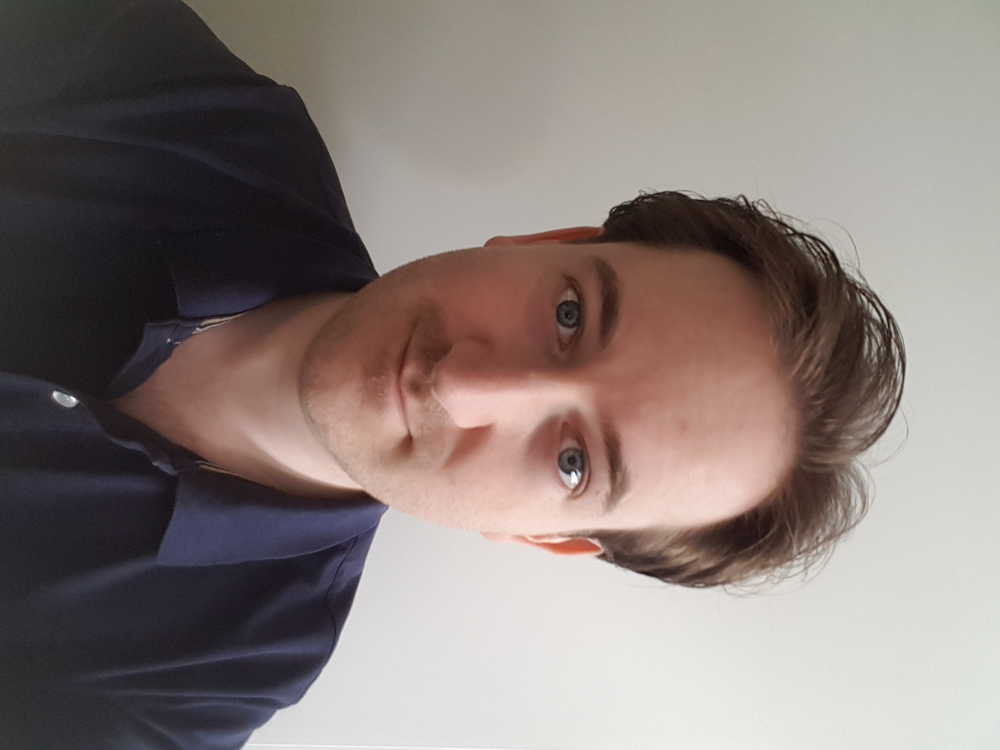

tekst tekst tekst tekst teksttekst tekst tekst tekst teksttekst tekst tekst tekst teksttekst tekst tekst tekst teksttekst tekst tekst tekst teksttekst tekst tekst tekst teksttekst tekst tekst tekst teksttekst tekst tekst tekst teksttekst tekst tekst tekst teksttekst tekst tekst tekst teksttekst tekst tekst tekst teksttekst tekst tekst tekst teksttekst tekst tekst tekst tekst

CV Stefan Duineveld
Werkervaring
| Vrijwilliger Villa Abel  sep. 2022 tot heden |
Het begeleiden van studenten met autisme met hun dagelijks werk.
|
| Junior marketing Search 4 Solutions  jun. 2021 |
Bijhouden van social media kanalen en artikelen (her)schrijven. |
| Forensic ICT Researcher Terre des Hommes  feb. 2018 - jul. 2019 |
OSINT-onderzoek naar mogelijke seksuele uitbuiting van minderjarigen n.a.v. meldingen. |
| Afstudeerder Hogeschool Leiden mei 2017 - jan. 2018 |
Onderzoek verrichten naar benodigdheden van een forensisch lab. |
| Afstudeerder TNO  feb. 2016 - aug. 2016 |
Nieuwe bronnen m.b.t. cybercriminaliteit en het Dark Web identificeren en analyseren, waarna deze toevoegen aan een webcrawler m.b.v. XPath. |
| Stagiair Belastingdienst  sep. 2014 - jan. 2015 |
Werkzaam bij het Internet Service Centre, onderdeel van de Landelijke Toezicht Organisatie.
|
Opleidingen & Cursussen
| Front-end Developer Nha jan. - heden |
Tijdens deze cursus werden de basisprincipes van webdesign behandeld, alsmede responsive design, UX en testing. Er werd hierbij dieper ingegaan op o.a.:
|
| Autisme Centraal Methodiek Autisme Centraal apr. 2023 |
De Autisme Centraal Methodiek helpt je anders kijken naar het gedrag van mensen met autisme én naar je eigen begeleiding. Aan de hand van de 6 kernbegrippen heb ik geleerd om een autismevriendelijke school, leefgroep, thuis of werkomgeving te creëren.
|
| The Power 2 Act 2Connect-us nov. 2021 - apr. 2022 |
Training voor het verbeteren van sollicitatievaardigheden en fysieke en mentale welzijn, bestaande uit een bewegingsprogramma, mentale training, individuele begeleiding en training/coaching naar- en op de werkvloer. |
| Informatica Hogeschool Leiden sep. 2011 - feb. 2018 |
Bachelor Informatica met als specialisatie Forensisch ICT en een minor in sensortechnologie. Alleen het afstudeertraject niet afgerond. |
Nevenactiviteiten
| Vertaler Reporting From Ukraine  mrt. - apr. 2023 |
Het vertalen en ondertitelen van content van Youtube kanaal Reporting From Ukraine.
|
| Owner/Admin 2015 - dec. 2022 |
Het beheren van een game server en onderhouden van een actieve community via Discords, fora en de spellen zelf (Minecraft modpack en Rust). |
| Tutor oct. 2021 - mei 2022 |
2x per week individueel Nederlands les geven. |
Over Mij
| Tutor oct. 2021 - mei 2022 |
2x per week individueel Nederlands les geven. |
| Tutor oct. 2021 - mei 2022 |
2x per week individueel Nederlands les geven. |
Menu 2
Some content in menu 2.